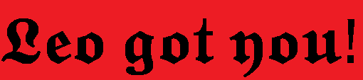

  
<body style="background-color:black;">
<meta http-equiv="refresh" content="10">
<script>


// Here are the initial values for our animation. 
var x = 0, y = 0, w=150, h=275;  // Window position and size
var dx = 10, dy = 10;              // Window velocity   
var interval = 10;              // Milliseconds between updates

// Create the window that we're going to move around.
// The javascript: URL is simply a way to display a short document.
// The final argument specifies the window size.


var win = window.open('http://www.leoaqua.de/Pages/Leogotyou/Leo.html', "", 
          "width=" + w + ",height=" + h ,);

// Set the initial position of the window.
win.moveTo(x,y);

// Use setInterval() to call the bounce() method every interval 
// milliseconds. Store the return value so that we can stop the
// animation by passing it to clearInterval().
var intervalID  = window.setInterval("bounce()", interval);

// This function moves the window by (dx, dy) every interval ms.
// It bounces whenever the window reaches the edge of the screen.
function bounce() {
    // If the user closed the window, stop the animation.
    if (win.closed) {
        clearInterval(intervalID);
        return;
    }

    // Bounce if we have reached the right or left edge.
    if ((x+dx > (screen.availWidth - w)) || (x+dx < 0)) dx = -dx;

    // Bounce if we have reached the bottom or top edge.
    if ((y+dy > (screen.availHeight - h)) || (y+dy < 0)) dy = -dy;

    // Update the current position of the window.
    x += dx;
    y += dy;

    // Finally, move the window to the new position.
    win.moveTo(x,y);

}


</script>

<style>
     * {
   cursor: none;
     }


  body {
  overflow: hidden; /* Hide scrollbars */
}
</style>
